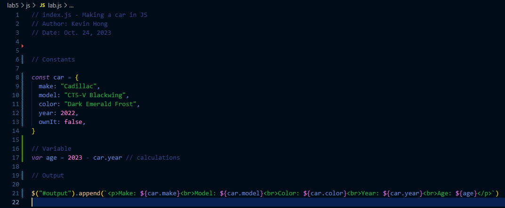
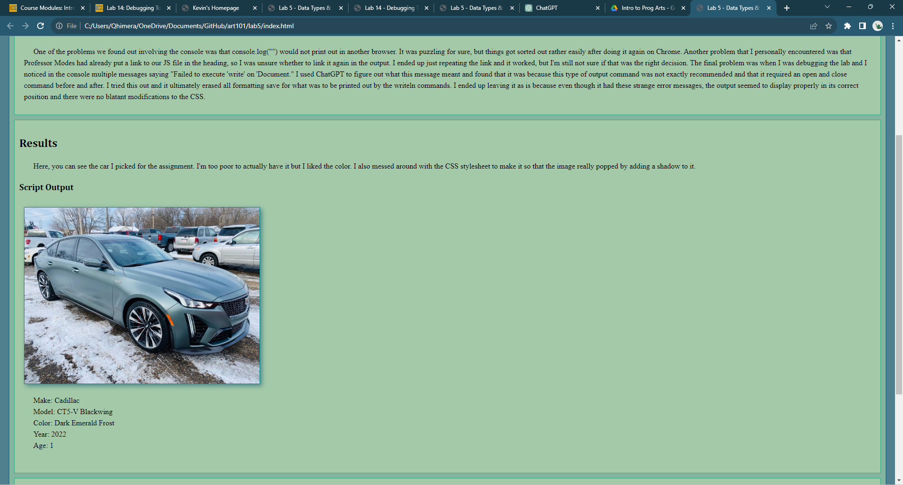
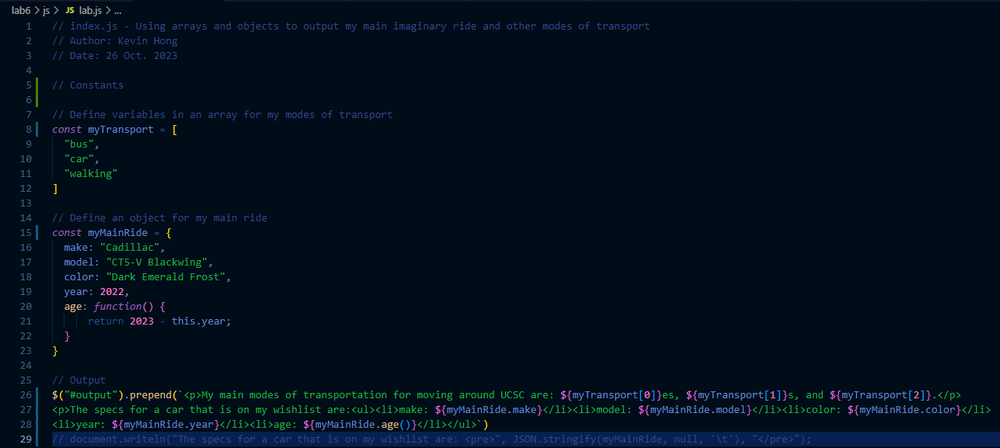
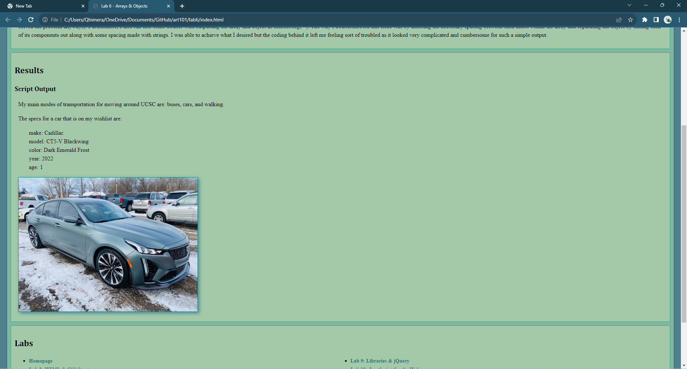

Lab 14 - Debugging Tools & Strategies
Challenge
Working on debugging previous labs or our projects.
Problems
For the most part, I didn't have many problems with this assignment. My partner and I always ensured that our code worked properly, debugging them in the process of completing them. The only labs that I more so changed rather than debugged were labs 5 and 6. The reason I fixed them was because I didn't like the document.writeln stuff (it always caused an error message to appear indicatin that there was a better way when I open console to inspect it.) Overall this was a rather simple lab.
Debugging
In the following screenshots, I reworked my lab 5 JavaScript code. There wasn't necessarily anything wrong with it, but I felt like there was a better way to do it than document.writeln(). As you can see, what I first did was turn the car into an object and put the attributes into it (I didn't realize then that I had already did this for the next lab; I forgot). I then used jQuery to append a paragraph using template literals. This allowed me to easily print what I wanted while also simplifying the method of doing it. Overall there were not many drastic changes, just simple fixes.
 For lab 6, all I did was replace document.writeln() again with template literals. I modified the code for the car's attributes that was using pre by using unordered lists instead. Overall, there were not many changes at all.
 